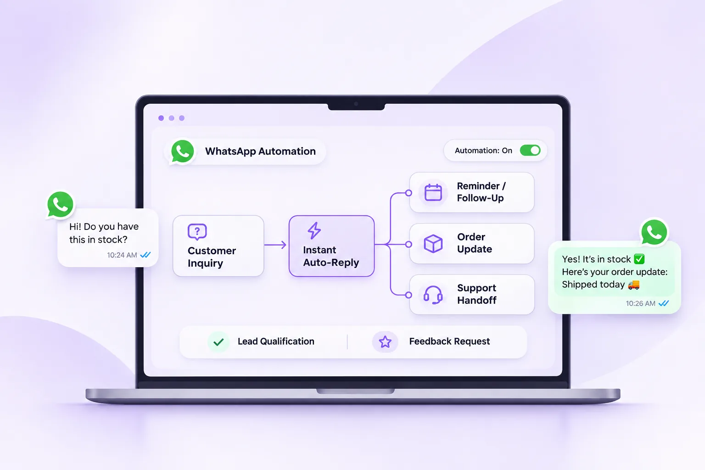

WhatsApp Automation for Small Businesses: 7 Useful Workflows

Your team should not spend every morning repeating the same delivery update, fee explanation or appointment reminder. WhatsApp automation helps when it removes a specific repetitive step—not when it replaces thoughtful customer service with endless bot menus.
What WhatsApp automation actually means
Automation connects a business event or customer request to a defined messaging action. It might acknowledge an enquiry, route a conversation to a teammate or send an eligible reminder. The exact setup depends on your WhatsApp Business Platform integration, templates and chosen software.
Before designing a workflow, clarify its trigger, customer permission, expected response and human fallback. If those four elements are unclear, the workflow is probably not ready to launch.
1. Welcome and first-response routing
A new enquiry may arrive from an ad, a website or a QR code. Instead of leaving the customer waiting, a first-response workflow can acknowledge the enquiry and offer a small number of useful paths, such as product details, pricing or speaking with the team.
Keep the message short and make it easy to reach a real person. Automated replies should not pretend that a support agent has already handled the request.
2. Frequently asked questions
Collect the questions your team answers most often: working hours, location, product availability, batch timings, service areas and return conditions. Start with verified answers from a maintained business knowledge source.
If a question is ambiguous or the knowledge is outdated, route the chat to a human. A confident wrong answer is worse than a quick handoff.
3. Enquiry qualification and ownership
A service business might ask whether a lead needs a website, an e-commerce store or a mobile app. A coaching institute might ask for the course or batch the student wants. Those answers can help route the conversation to the right team.
Avoid long forms inside chat. Gather only information needed for the next action and protect personal details appropriately.
4. Appointment and demo reminders
For consultations, demos or classes, eligible reminders can help customers remember scheduled appointments. Useful reminders include the confirmed time, location or meeting link and a straightforward rescheduling option.
Transactional reminders and promotional re-engagement are not always the same category under Meta rules. Use the correct approved workflow and template where required.
5. Order and service updates
An online seller can keep customers informed about an order being confirmed, shipped or delayed. Service businesses can communicate booking confirmations or job-status updates. These messages work best when they contain actual, verified status data.
Do not automate claims such as “shipped” unless the underlying order system confirms that state.
6. Human handoff from automation
A smart workflow knows when to stop. Refund disputes, unusual questions, frustrated customers and sensitive requests deserve a clear route to a person. A shared inbox with assignment and history helps the next teammate understand the conversation.
A useful handoff shows the customer that the request is being escalated instead of restarting the conversation from zero.
7. Consent-based follow-up campaigns
After a product enquiry or purchase, businesses may want to share relevant updates with customers who have opted in. Segment by real interest rather than sending every promotion to every contact.
Respect opt-outs, Meta policies and applicable privacy requirements. Automation should help the right customer receive the right message, not make unsolicited mass messaging easier.
How to start without overbuilding
Pick one workflow with a clear measurable goal. Document the trigger, template, data source, routing rule and failure case. Test it with your team, review customer feedback and only then expand.
We're designing Notiq's upcoming messaging and automation platform around practical workflows and approachable UI for Indian businesses. The product is in pre-launch, and release-specific automation availability will be confirmed before public use.
Frequently asked questions
Can WhatsApp automation replace customer support staff?
It can reduce repetitive work, but complex or sensitive requests still need appropriate human assistance.
Do I need the WhatsApp Business API for advanced workflows?
Many structured, multi-agent or integrated workflows use the WhatsApp Business Platform through software. The free app offers more limited tools.
Can I automate marketing follow-ups?
Eligible, consent-based promotional messaging may be possible through approved templates, subject to Meta rules and applicable laws.
How should I measure automation success?
Track meaningful outcomes such as response time, completed resolutions, handoff quality, customer satisfaction and cost—not only messages sent.
Build simpler WhatsApp communication with Notiq
Bitmint Lab is developing Notiq with clean interfaces, transparent Meta-rate handling and useful business messaging workflows in mind. Features and plan details will be confirmed as launch approaches.
Explore Notiq's upcoming WhatsApp automation platform and early access →
New to the API? Start with our complete WhatsApp Business API guide for India.
Editorial note: Verify current Meta pricing, eligibility, template rules and consent requirements before running campaigns. Illustrated product visuals are not guaranteed live feature screenshots.